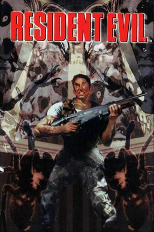

Horror · 1996
Resident Evil
Fixed cameras, tank controls, and ammunition as arithmetic.

Cover: Wikipedia: Resident Evil (1996 video game)
Facts
- Released
- 1996-03-22
- Genre
- Survival Horror
- Category
- Horror
- Platforms
- Nintendo, PC, PlayStation, Sega
- Developers
- Capcom
- Publishers
- Capcom